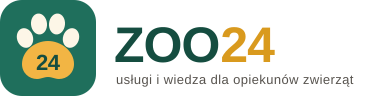
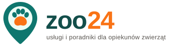
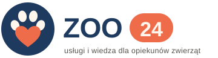
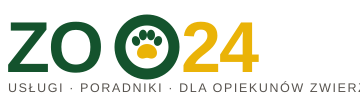

zielony kafel, łapa, „24” w poduszce

łapa w pinezce mapy: „znajdź usługę blisko”, małe litery, turkus + pomarańcz

okrągły sygnet, poduszka-serce (troska), „24” w pigułce; granat + koral

litera O jako łapa; ciemna zieleń + złoty, bez osobnego sygnetu
